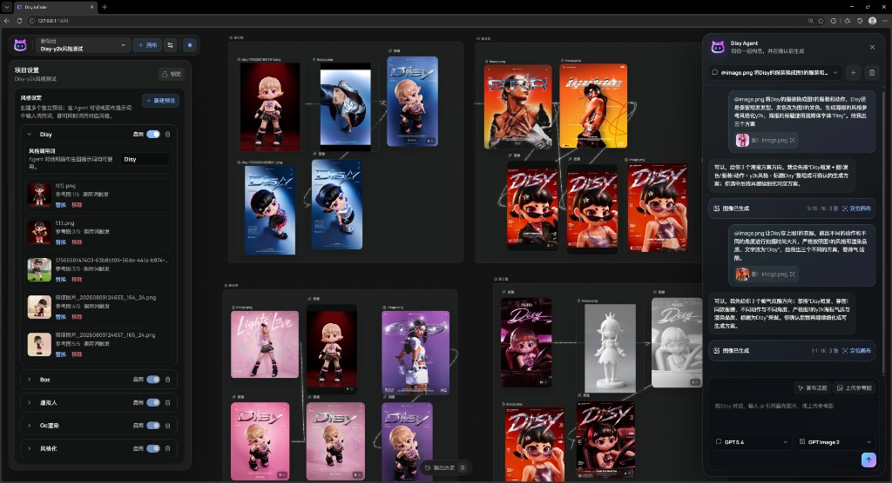
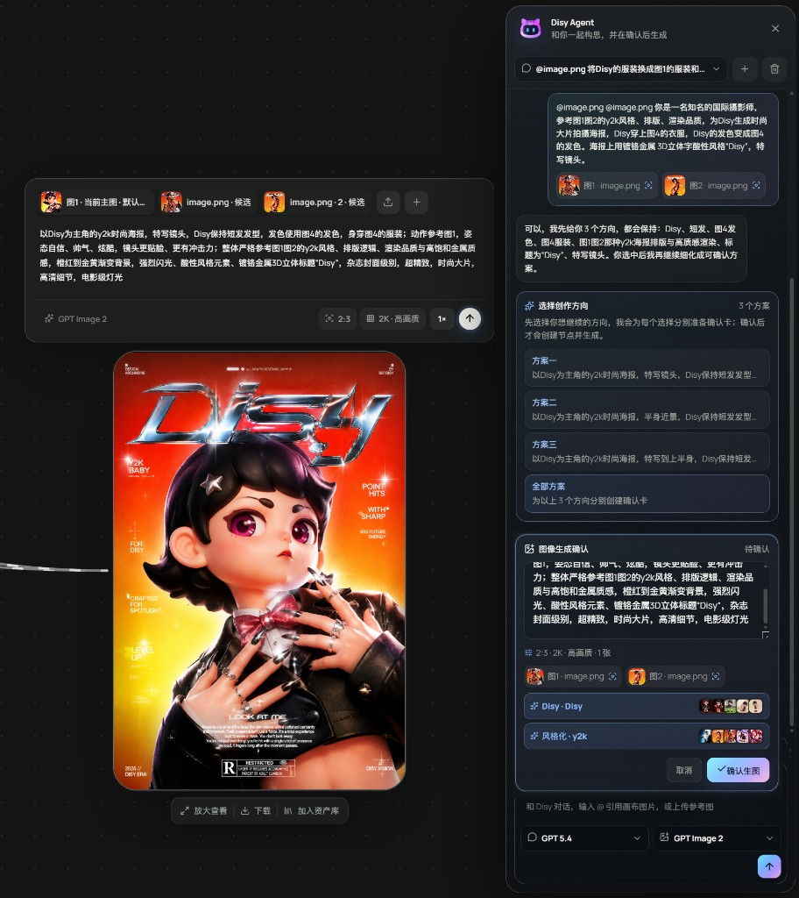
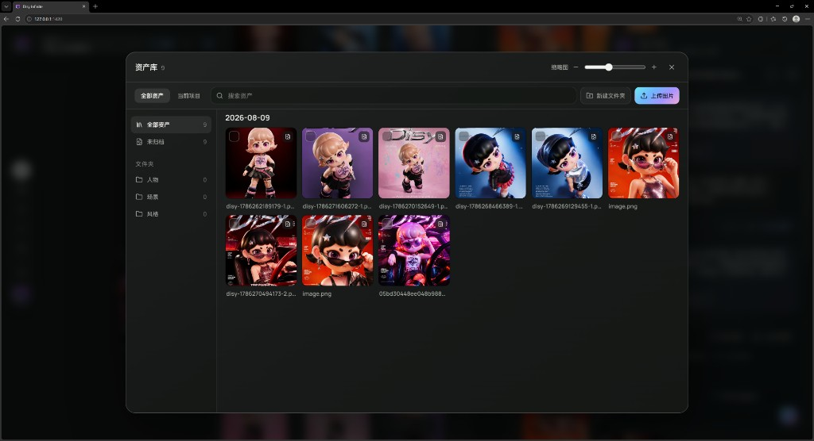

INFINITE CANVAS
关系，不必藏在文件名里
节点、连线、分组、资产与历史共同构成创作上下文。你看到的不只是结果，也是它为何出现。
把灵感、参考图、提示词、Agent 对话和每一次生成结果，放回同一张持续生长的无限画布。

NOT ANOTHER PROMPT BOX
Agent 先理解上下文、整理方案，再由你决定生成哪一个。每个方向独立，参考关系完整，不把关键词煮成一锅粥。

拖入参考图、文本、角色和已有结果。
Agent 给出多个彼此独立的视觉方案。
参数、参考顺序与来源关系一起被保留。
节点、连线、分组、资产与历史共同构成创作上下文。你看到的不只是结果，也是它为何出现。
Y2K toy world
soft studio light
分别配置文本、图像与视频模型，让工具适配你的工作流。
角色、图片和节点组合都能沉淀为下一次创作的起点。

生成历史不只负责“找回图片”，也负责保留每次尝试的决策依据。
项目、资产、历史和 Agent 会话默认保存在浏览器本机。API Key 不进入项目导出包，也不需要交给 DisyLab 的服务器。
下一小版本先完成多语言与深浅色主题；大版本将扩展 D-Motion 与 D-Board。前后端分离暂缓，桌面端随后推出，音频生成将在后续逐步加入。
图像与文字 Skill、漫画分镜工作流、文件工具箱，以及个人中心和画布交互修复。
扩展界面语言，并提供完整的深色与浅色模式切换。
面向文字、图形、图片与视频素材的轻量动效工作空间。
支持手绘、头脑风暴、流程图、表格，以及 PDF 等多种格式导出。